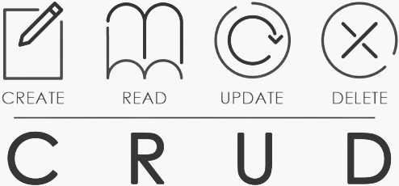

Semana 12: Desarrollo de un CRUD en Next.js
Definiciones
Un CRUD es una aplicación que permite Crear, Leer, Actualizar y Eliminar datos. En Next.js, podemos implementar un CRUD utilizando las características de este framework para manejar el enrutamiento, la obtención de datos y la manipulación del estado.
Next.js es un framework de React que permite la renderización tanto del lado del cliente (CSR) como del lado del servidor (SSR), ofreciendo flexibilidad y rendimiento mejorado para aplicaciones web.
Algunos aspectos clave del desarrollo de un CRUD en Next.js incluyen:
- Rutas Dinámicas: Utilización de rutas dinámicas en Next.js para manejar diferentes operaciones del CRUD.
- API Routes: Creación de rutas API para gestionar las operaciones del servidor (creación, lectura, actualización y eliminación de datos).
- State Management: Gestión del estado en el frontend para reflejar los cambios en los datos.
Procedimientos
Para implementar un CRUD en Next.js, se deben seguir los siguientes procedimientos:
- Configuración del Proyecto: Crear un nuevo proyecto Next.js utilizando
create-next-app y configurar las dependencias necesarias.
- Creación de Rutas API: Definir rutas API en la carpeta
pages/api para manejar las operaciones CRUD.
- Conexión a la Base de Datos: Configurar la conexión a la base de datos (por ejemplo, utilizando MongoDB, PostgreSQL, etc.) en las rutas API.
- Implementación de la Lógica CRUD: Escribir la lógica para crear, leer, actualizar y eliminar datos en las rutas API.
- Creación de Páginas y Componentes: Desarrollar las páginas y componentes en Next.js para interactuar con las rutas API y mostrar los datos.
- Gestión del Estado: Utilizar herramientas de gestión del estado como React Context o Redux para manejar el estado de la aplicación.
- Estilización: Aplicar estilos a las páginas y componentes para mejorar la experiencia del usuario.
Resultados
La implementación de un CRUD en Next.js ofrece varios resultados beneficiosos:
- Funcionalidad Completa: Permite a los usuarios crear, leer, actualizar y eliminar datos de manera eficiente.
- Experiencia de Usuario Mejorada: Gracias a la capacidad de renderización del lado del servidor y del cliente, los usuarios experimentan una aplicación rápida y receptiva.
- Escalabilidad: Next.js facilita la creación de aplicaciones escalables que pueden manejar grandes cantidades de datos y tráfico.
- Facilidad de Mantenimiento: La estructura organizada de Next.js, junto con su sistema de rutas y API, hace que el mantenimiento y la actualización de la aplicación sean más sencillos.
